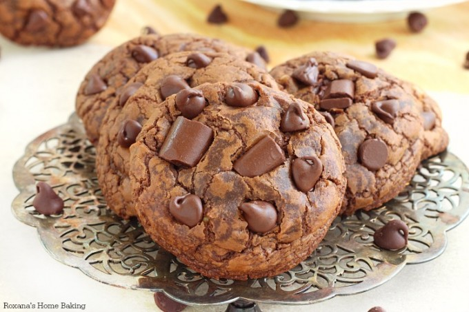
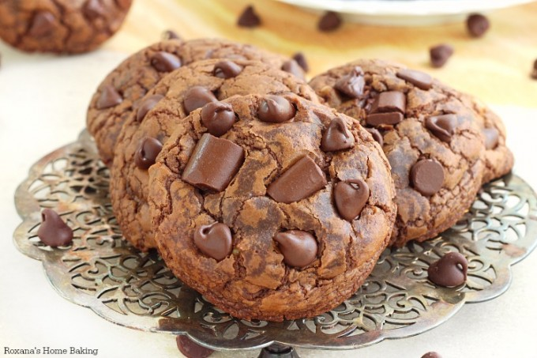

Chocolate Fudge Cookies
INGREDIENTS
1 cup semi-sweet chocolate chips
2 tablespoons unsalted butter
1 cup + 3 tablespoons all-purpose flour
3 tablespoons unsweetened cocoa powder
1 teaspoon baking powder
1/2 teaspoon salt
1/2 cup granulated sugar
1/4 cup + 2 tablespoons packed light brown sugar
2 large eggs, at room temperature
2 tablespoons whole milk
1 and 1/2 teaspoons vanilla extract
1 cup milk chocolate chips
DIRECTIONS
1. Preheat oven to 325 degrees (F). Line two large baking sheets with parchment paper, lightly spray them with non-stick spray, and set aside.
2. Place the semi-sweet chocolate chips and butter in a small, microwave safe bowl. Heat them in the microwave for for 15 second increments of time, mixing in between each, until butter and chocolate are completely melted and can easily be whisked smooth. Set aside. *You may also do this process on the stove top if you don't own a microwave.
3. In a medium-sized bowl whisk together the flour, cocoa powder, baking powder, and salt. Set aside.
4. In a separate medium-sized bowl whisk together the sugars, eggs, milk, and vanilla.
5. Add the dry ingredients into the wet ingredients, and stir to combine - be sure not to over mix here!
6. Fold in the chocolate/ butter mixture and the milk chocolate chips into the batter, stirring until everything is just combined.
Scoop 1/4 cupfuls of the batter on the prepared baking sheets, place pans in the oven, reduce heat to 300 degrees, and bake for 18-20 minutes.
7. Allow cookies to completely cool on the baking sheet before serving.